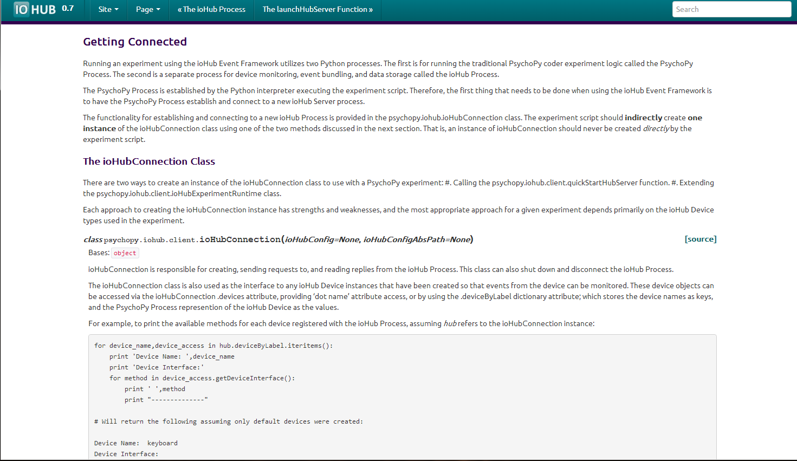
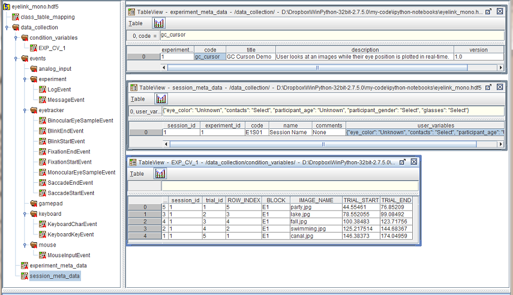
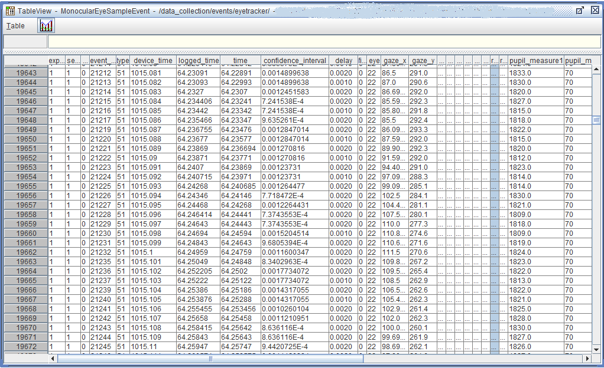

|
|
|
|
PsychoPy.ioHub is a Python package providing a cross-platform device event monitoring and storage framework.
ioHub is free to use and is GPL version 3 licensed.
Docs are yet to be merged with the core PsychoPy documentation
There are three ways to create a PsychoPy experiment which uses the iohub process. All approaches ultimately give you access to an instance of the ioHubConnection Class for communication and control of the iohub server:
Each approach has pros and cons depending on the devices being used, whether Coder or Buider is being used for experiment creation, etc.
See the ioHub Getting Connected documentation section for details on each approach.
An example python script is available at [workshop_materials_root]python_source/launchHubServer.py, which illustrates how to use the launchHubServer() method. Several other examples included in the workshop materials illustrate how to use the different connection approaches.
The API details for the ioHub EyeTracker device can be found here
The Common Eye Tracking Interface provides the same user level Python API for all supported eye tracking hardware, meaning:
Visit the ioHub documentation for Eye Tracking Hardware Implementations for details on each implementation.
Note: Area’s of Functionality in bold are considered core areas, and must be implemented for every eye tracker interface.
See the Common Eye Tracker Interface API specification for API details.
For relatively small amounts of data you can fetch information from the ioHub while back to the stimulus presentation thread and use PsychoPy’s standard data storage facilities. (You would still benefit from the fact that the events had been timestamped by ioHub on collection so it doesn’t matter that you only retrieve the data from ioHub once per screen refresh). At other times you might be saving large streams of eye-movement data and you can use ioHub to save the data directly to disk using the HDF5 standardised data format.
ioDataStore HDF5 File Viewed using the HDFView Application
Example Event Table Viewed using the HDFView Application
Contains ioHub device event reading functionality
Simple event access API
Access events using the same type constants and event attributes as are used during on-line event access.
Supports on-disk querying of event tables based on event attribute values and meta-data info.; fast retieval of only the events which meet the query constraints.
Source file: python_source/datastore_examples/printing_datastore_file_structure.py
from psychopy.iohub.datastore.util import ExperimentDataAccessUtility
# Create an instance of the ExperimentDataAccessUtility class
# for the selected DataStore file. This allows us to access data
# in the file based on Device Event names and attributes.
#
experiment_data=ExperimentDataAccessUtility('.\hdf5_files' , 'events.hdf5')
# Print the HDF5 Structure for the given ioDataStore file.
#
experiment_data.printHubFileStructure()
# Close the HDF5 File
#
experiment_data.close()
Source file: python_source/datastore_examples/access_exp_metadata.py
from psychopy.iohub.datastore.util import ExperimentDataAccessUtility
def printExperimentMetaDataDemo():
# Create an instance of the ExperimentDataAccessUtility class
# for the selected DataStore file. This allows us to access data
# in the file based on Device Event names and attributes.
#
experiment_data=ExperimentDataAccessUtility('..\hdf5_files' , 'events.hdf5')
# Access the Experiment Meta Data for the first Experiment found in the file.
# Note that currently only one experiment's data can be saved in each hdf5 file
# created. However multiple sessions / runs of the same experiment are all
# saved in one file.
#
exp_md=experiment_data.getExperimentMetaData()[0]
printExperimentMetaData(exp_md)
# Close the HDF5 File
#
experiment_data.close()
def printExperimentMetaData(exp_md):
"""
Function to 'pretty print' the data. Should be added to the
ExperimentDataAccessUtility class itself.
"""
exp_md_dict=exp_md._asdict()
print 'ExperimentMetaData:'
for fname,fvalue in exp_md_dict.iteritems():
if fname !='sessions':
print "{0} : {1}".format(fname,fvalue)
printSessionMetaData(exp_md.sessions)
def printSessionMetaData(sess_md):
"""
Function to 'pretty print' the data. Should be added to the
ExperimentDataAccessUtility class itself.
"""
for session_info in sess_md:
sess_md_dict=session_info._asdict()
print '\tSessionMetaData:'
for fname,fvalue in sess_md_dict.iteritems():
print "\t\t{0} : {1}".format(fname,fvalue)
# Run the main demo function
#
printExperimentMetaDataDemo()
Source file: python_source/datastore_examples/read_condition_data.py
from psychopy.iohub.datastore.util import ExperimentDataAccessUtility
from pprint import pprint
def printExperimentConditionVariableDemo():
# Create an instance of the ExperimentDataAccessUtility class
# for the selected DataStore file. This allows us to access data
# in the file based on Device Event names and attributes.
#
experiment_data=ExperimentDataAccessUtility('..\hdf5_files' , 'events.hdf5')
# Here we are accessing the condition values saved.
# A list is returned, with each element being the condition variable data
# for a trial of the experiment, in the order the trials
# were run for the given session.
#
condition_variables=experiment_data.getConditionVariables()
print "Experiment Condition Variable values:"
print
for variable_set in condition_variables:
pprint(dict(variable_set._asdict()))
print
# Close the HDF5 File
#
experiment_data.close()
# Run the main demo function
#
printExperimentConditionVariableDemo()
Source file: python_source/datastore_examples/access_events_with_data.py
from psychopy.iohub.datastore.util import ExperimentDataAccessUtility
from psychopy.iohub import EventConstants
def printEventTypesWithDataDemo():
# Create an instance of the ExperimentDataAccessUtility class
# for the selected DataStore file. This allows us to access data
# in the file based on Device Event names and attributes.
#
experiment_data=ExperimentDataAccessUtility('..\hdf5_files' , 'events.hdf5')
# Get any event tables that have >=1 event saved in them
#
events_by_type=experiment_data.getEventsByType()
# print out info on each table
#
for event_id, event_gen in events_by_type.iteritems():
event_constant=EventConstants.getName(event_id)
print "{0} ({1}): {2}".format(event_constant,event_gen.table.nrows,event_gen)
# Close the HDF5 File
#
experiment_data.close()
# Run the main demo function
#
printEventTypesWithDataDemo()
Source file: python_source/datastore_examples/access_single_event_table.py
from psychopy.iohub.datastore.util import ExperimentDataAccessUtility
from psychopy.iohub import EventConstants
def printQueriedEventsDemo():
# Create an instance of the ExperimentDataAccessUtility class
# for the selected DataStore file. This allows us to access data
# in the file based on Device Event names and attributes.
#
experiment_data=ExperimentDataAccessUtility('..\hdf5_files' , 'events.hdf5')
# Retrieve the 'time','device_time','event_id','delay','category','text'
# attributes from the Message Event table, where the event time is between
# the associated trials condition variables TRIAL_START and TRIAL_END
# value.
# i.e. only get message events sent during each trial of the eperiment, not any
# sent between trials.
#
event_results=experiment_data.getEventAttributeValues(EventConstants.MESSAGE,
['time','device_time','event_id','delay','category','text'],
conditionVariablesFilter=None,
startConditions={'time':('>=','@TRIAL_START@')},
endConditions={'time':('<=','@TRIAL_END@')})
for trial_events in event_results:
print '==== TRIAL DATA START ======='
print "Trial Condition Values:"
for ck,cv in trial_events.condition_set._asdict().iteritems():
print "\t{ck} : {cv}".format(ck=ck,cv=cv)
print
trial_events.query_string
print "Trial Query String:\t"
print trial_events.query_string
print
event_value_arrays=[(cv_name,cv_value) for cv_name,cv_value in trial_events._asdict().iteritems() if cv_name not in ('query_string','condition_set')]
print "Trial Event Field Data:"
for field_name,field_data in event_value_arrays:
print "\t"+field_name+': '+str(field_data)
print
print '===== TRIAL DATA END ========'
experiment_data.close()
# Run the main demo function
#
printQueriedEventsDemo()